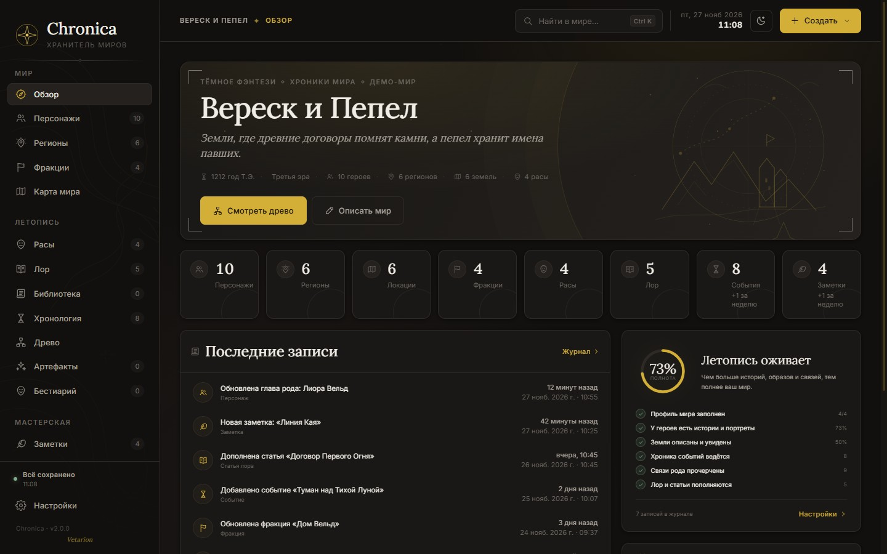
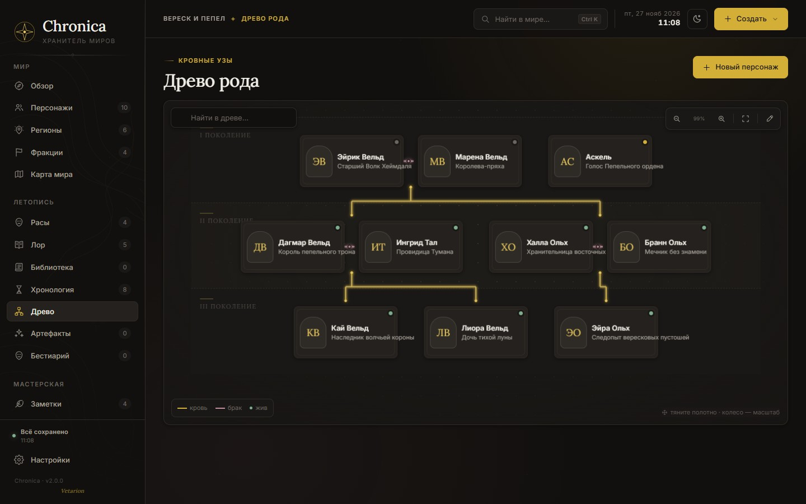
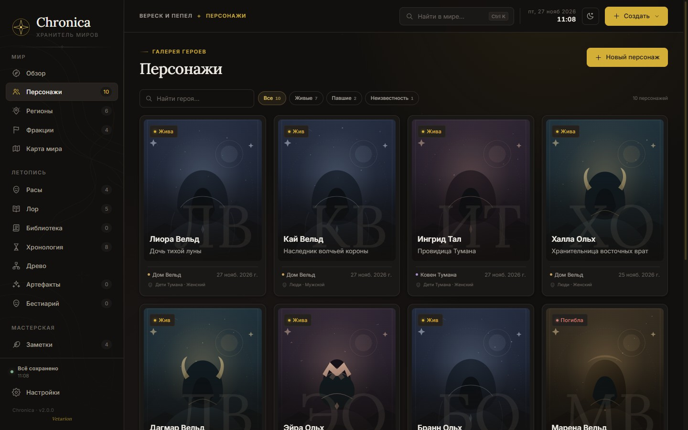
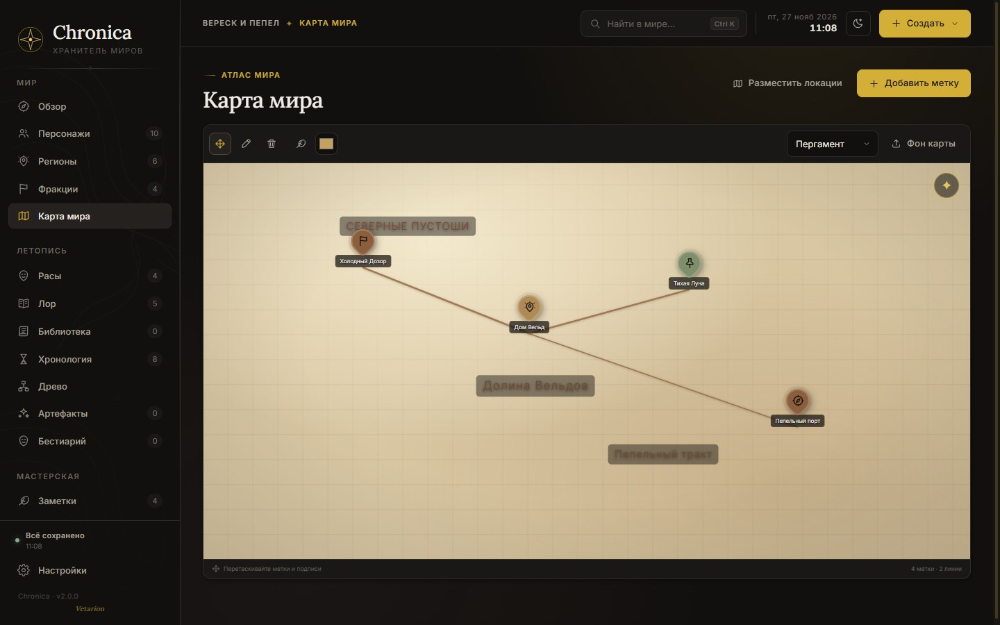

Миры и герои
Персонажи с историей, внешностью, галереей, палитрой, голосом и музыкой.
Chronica 2.0 · Windows
Миры, герои, древо рода, карта и летопись — в одном кабинете. Без подписки, без аккаунта и без облака. Всё остаётся на вашем компьютере.

01 / Зачем
Chronica не пытается быть облачным сервисом. Это спокойный инструмент для автора: открыть, записать, связать, сохранить.
Персонажи с историей, внешностью, галереей, палитрой, голосом и музыкой.
Ручное перетаскивание, читаемые связи и двусторонние отношения в карточках.
Метки, подписи, маршруты, реки и фоны. Или загрузите свою карту.
Жанровые палитры, 15 узоров, свои шрифты, фон и иконки разделов.
Артефакты, бестиарий, оружие или транспорт — подключаются под ваш мир.
Word, Excel, JSON и ZIP-архивы со всеми изображениями, аудио и шрифтами.
02 / Как выглядит
Тёмные кабинеты, тёплая латунь и книжная типографика. Chronica не мешает тексту — она его обрамляет.



03 / Настройка
Выберите жанр — и Chronica подстроит палитру, шрифт и узор фона. Потом всё можно менять по отдельности: от масштаба интерфейса до собственных иконок разделов.
«Земли, где древние договоры помнят камни, а пепел хранит имена павших».
04 / Приватность
Chronica хранит данные в обычной папке ChronicaData рядом с программой. Хотите — делайте ZIP-копии. Хотите — переносите на другой компьютер. Хотите — подключайте общую папку Яндекс Диска, Google Drive или OneDrive для совместной работы.
Иногда для мира нужно не больше места, а больше тишины.
05 / Начать
Установщик создаст ярлыки и предложит запустить приложение. Портативная версия — просто распакуйте и запустите Chronica.exe.
06 / Вопросы
В папку ChronicaData рядом с программой. В установленной версии — в папке установки; если она недоступна для записи, используется %LocalAppData%\Chronica.
Нет. Интернет нужен только для проверки обновлений GitHub и импорта из старых чатов через DeepSeek — и то по желанию.
Да, через общую папку Яндекс Диска, Google Drive, OneDrive или сетевую папку. Без собственного сервера.
Скопируйте папку ChronicaData целиком рядом с новой копией программы. Резервная копия в ZIP собирает ещё и изображения, аудио и шрифты.